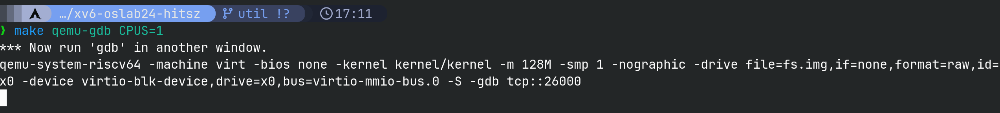
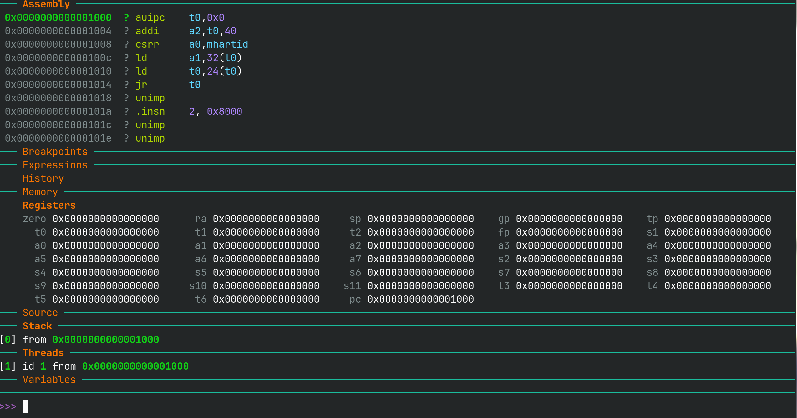
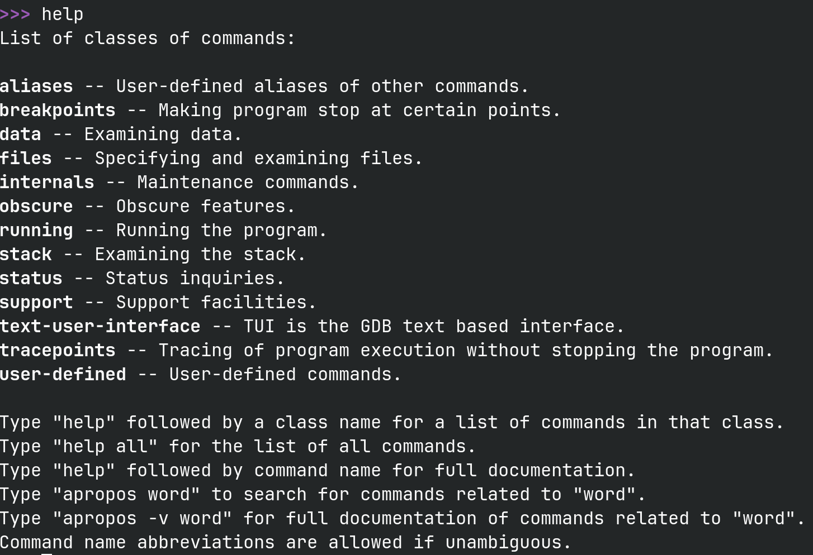
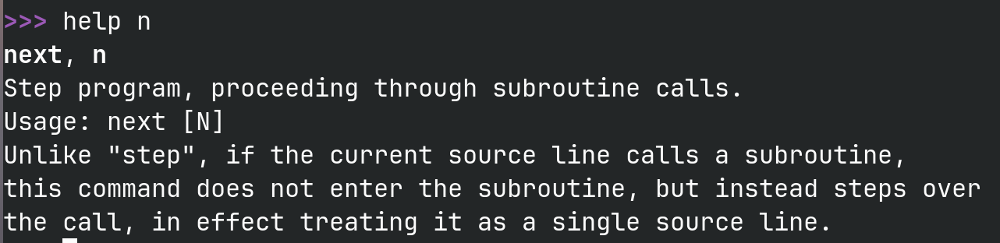
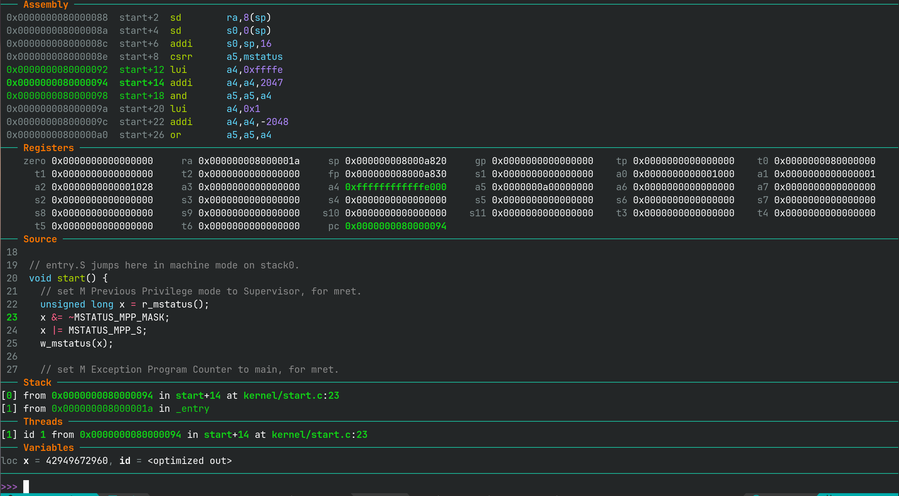

GDB 命令行调试指南¶
这页能帮你做到什么
看完这页后，你应该能完成三件事： 启动 xv6 的命令行调试 、 用几条最常用的 GDB 命令定位问题 、 调试一个用户态程序 。
先记住一条主线
对本课程来说，GDB 不需要一下子学很多。先掌握这条主线就够用了： 下断点 → 运行到断点 → 看变量 / 调用栈 / 汇编 → 单步继续 。
为了帮助同学们上手，我们录制了两个演示视频，建议按需观看：
- 【使用 GDB 调试 xv6 启动流程（1）】 https://www.bilibili.com/video/BV1zAt6e3EfU/?share_source=copy_web&vd_source=a822dcda3537564ccdd0bb45aa0afe33
- 【使用 GDB 调试 xv6 启动流程（2）】 https://www.bilibili.com/video/BV1MrtUe7ELC/?share_source=copy_web&vd_source=a822dcda3537564ccdd0bb45aa0afe33
1. 开始前准备¶
1.2 安装 gdb-dashboard¶
原始 GDB 的命令行界面比较朴素，推荐安装 gdb-dashboard 插件。
先备份原有配置（如果没有这个文件，报错可以忽略）：
mv ~/.gdbinit ~/.gdbinit.bak
下载课程组维护的配置文件：
wget -P ~ https://gitee.com/ftutorials/gdb-dashboard/raw/master/.gdbinit
让 GDB 信任各目录下的 .gdbinit：
grep -qxF 'set auto-load safe-path /' ~/.gdbinit || echo 'set auto-load safe-path /' >> ~/.gdbinit
如果你想让界面高亮更清楚，可以额外安装 pygments：
pip install --no-cache-dir pygments
远程实验平台说明
远程实验平台通常已经具备所需环境，pygments 一般不需要你再手动安装。
2. 最快上手流程¶
2.1 第一个终端：启动 QEMU 并等待 GDB 连接¶
在 xv6-oslabs-hitsz 目录下执行：
make qemu-gdb CPUS=1
这里使用 CPUS=1 ，是为了让调试更稳定，也更容易看清执行过程。

为什么建议单核调试？
多核情况下，不同 CPU 会同时推进执行。刚开始学习 GDB 时，更容易看乱。对大多数实验问题来说，单核已经足够。
2.2 第二个终端：启动 GDB¶
在 同一个仓库目录 下新开一个终端，执行：
make gdb
启动后通常会看到类似下面的界面：

远程实验平台特别提醒
如果你使用的是远程实验平台，make qemu-gdb CPUS=1 和 make gdb 需要在 同一计算节点 上执行。否则会出现端口连接超时问题。
最简单的做法是：
- 先打开第一个终端，登录远程实验平台；
- 紧接着再打开第二个终端，再次登录远程实验平台；
- 在第一个终端运行
make qemu-gdb CPUS=1，在第二个终端运行make gdb。
登录后也可以先看命令行提示符里的主机名，例如 学号@comp0:~$、学号@comp1:~$。只有两个终端里的 comp? 相同，才说明它们处在同一计算节点上。更详细的说明可参考 实验环境问题 FAQ。
2.3 第一次建议先敲这几条命令¶
b main
c
bt
p cpus
x/i $pc
q
这几条命令分别完成：
b main：在main函数打断点c：继续运行到断点bt：看函数调用栈p cpus：打印变量x/i $pc：查看当前程序计数器对应的汇编指令q：退出 GDB
如果你第一次能顺利跑完这 6 条命令，就已经完成入门了。
3. 先会这些最常用命令¶
先熟悉下面这些命令，后面调试 xv6 时基本都会用到：
| 命令 | 完整写法 | 作用 | 最常见场景 |
|---|---|---|---|
help 命令 |
help 命令 |
查看命令帮助 | 忘记命令语法时 |
b 位置 |
break 位置 |
设置断点 | 想在某个函数或某一行停下时 |
c |
continue |
继续运行 | 从当前断点继续跑时 |
n |
next |
源码单步，不进入函数 | 想按行排查，但先不进入函数时 |
s |
step |
源码单步，会进入函数 | 想跟进函数内部时 |
ni / si |
nexti / stepi |
汇编单步 | 调试系统调用、陷入与返回时 |
finish |
finish |
运行到当前函数返回 | 已经进函数，但想直接回到调用处时 |
p 表达式 |
print 表达式 |
打印变量或表达式 | 如 p p->pid |
x/格式 地址 |
examine /格式 地址 |
查看指定地址的内存内容 | 如 x/10i $pc、x/16x 0x80000000 |
i r |
info registers |
查看寄存器值 | 想看 pc、sp、a0 等寄存器时 |
bt |
backtrace |
查看调用栈 | 想知道当前是怎么走到这里时 |
q |
quit |
退出 GDB | 结束本次调试时 |
3.1 help 命令¶
不会某条命令时，先试：
help n
help break

例如 help n 会告诉你 n 是 next 的缩写，并说明它的用途。

3.2 单步执行怎么选¶
n：按源码走一步，但 不进入 函数s：按源码走一步， 会进入 函数ni：按汇编走一步，不进入调用si：按汇编走一步，可以进入调用
如果你在看 xv6 的启动流程、系统调用、陷入 / 返回、汇编过程，通常 ni / si 更有帮助。
3.3 观察状态的三件套¶
最常用的观察命令通常是：
p 变量名
bt
info registers
如果你还想看当前位置的汇编和栈附近的内容，也很常用：
x/10i $pc
x/16x $sp
你可以把它们理解成三类问题：
p：值对不对bt：怎么走到这里的info registers/x：机器当前到底在干什么
4. gdb-dashboard 够用即可¶
gdb-dashboard 会把源码、汇编、寄存器、栈等信息集中显示在一个界面里。

对本课程来说，最常看的区域通常是：
assembly：当前汇编位置source：当前源码位置registers：寄存器stack：调用栈variables：当前作用域变量
4.1 几条够用的 dashboard 命令¶
dashboard
dashboard history
dashboard -layout assembly source registers stack variables
dash -layout !
tui focus src
tui disable
它们的作用分别是：
dashboard：刷新 dashboard 布局dashboard history：显示 / 隐藏history区域dashboard -layout ...：只保留你想看的区域dash -layout !：恢复默认布局tui focus src：专注查看源码窗口tui disable：退出 TUI 模式，回到 dashboard
如果你刚开始用，不必折腾太多个性化配置，默认布局已经够用。
5. 一套典型的调试方法¶
如果你已经知道“程序大概在哪一段出问题”，推荐按这个顺序调：
- 在怀疑位置打断点
c跑到断点- 用
p看关键变量 - 用
bt看是谁调用到这里的 - 必要时用
n/s/ni/si单步推进 - 用
x/i $pc看当前汇编
例如：
b kernel/proc.c:exit
c
bt
p p->pid
p p->state
x/10i $pc
如果你现在不知道问题在哪，就先多用 bt 和 p；如果你已经知道就是某几条指令不对，就多用 ni / si 。
6. 课程里最常见的几个问题¶
6.1 make gdb 连不上 QEMU¶
先检查这三件事：
- 第一个终端是否还停在
make qemu-gdb CPUS=1 - 第二个终端是否在 同一个仓库目录 下执行
make gdb - 如果你在远程实验平台上，两个终端是否在 同一计算节点 上
多数“连不上”的问题，都是这三项里的某一项没有满足。
6.2 内核断点能停下，用户态断点没反应¶
这通常不是 GDB 坏了，而是 用户程序的符号还没有导入 。
对用户态程序调试，常见做法是：
add-symbol-file user/_ls
b user/ls.c:main
如果你还没导入符号，GDB 很难把地址和 user/ls.c 这样的源码位置对应起来。
6.3 不知道该用源码单步还是汇编单步¶
可以直接这样判断：
- 你想理解“这段 C 代码怎么走” → 先用
n/s - 你想看“陷入、返回、寄存器、跳转到底怎么变” → 先用
ni/si
对操作系统实验来说，很多关键问题都发生在“源码视角不够看清”的地方，所以别怕看汇编。
7. 常用调试技巧¶
7.1 暂停程序¶
调试过程中，如果程序一直在跑，可以直接在 GDB 中按 Ctrl + C 暂停。
7.2 条件断点和监视点¶
这些不是一开始必须会，但一旦会了，能省很多时间。
break 位置 if 条件：条件断点cond 编号 条件：给已有断点加条件watch 表达式：表达式变化时停下watch -l 地址：某个地址的内容变化时停下
例如：
break kernel/proc.c:123 if p->pid == 3
watch p->state
7.3 历史与脚本¶
GDB 的命令历史通常保存在 .gdb_history 文件里（一般在你启动 GDB 的目录下）。
这对本课程有两个直接用途：
- 回看你上次是怎么调的
- 整理成
commands.gdb脚本，交实验或复现过程时很方便
两个实用提醒
- 退出 GDB 后，历史才会写回
.gdb_history - 推荐用
q退出 GDB。q是一条 GDB 命令，会和前面的调试命令一起保存在.gdb_history中；Ctrl + D只是向终端发送结束输入，不是 GDB 命令，所以不会出现在历史里。
如果你想把一套调试过程保存成脚本，可以这样做：
- 从
.gdb_history找到你需要的命令 - 新建一个文本文件，比如
commands.gdb - 把这些命令贴进去
- 下次启动 GDB 后执行：
source commands.gdb
这也是 Lab1 里导出调试命令脚本最直接的做法。
7.4 调试用户态程序¶
下面以调试 ls 为例：
- 分别启动
make qemu-gdb CPUS=1和make gdb - 在运行
make gdb的那个终端里，看到(gdb)提示符后，输入c，让系统先继续运行 - 等运行
make qemu-gdb CPUS=1的窗口里出现 xv6 shell 后，在 GDB 终端里按Ctrl + C暂停 -
继续在 GDB 终端里导入用户程序符号：
add-symbol-file user/_ls -
仍然在 GDB 终端里，在
main入口打断点：b user/ls.c:main c -
切换到 xv6 shell 所在的窗口，输入：
ls -
再切回运行
make gdb的那个终端，继续调试这个用户程序
为什么有时断点会先停在别的地方？
GDB 是按地址打断点的，而 ls 的某些地址可能与别的用户程序（例如 sh）的地址重合。因此第一次停下时，未必就是你想要的 ls。如果信息明显不对，继续执行一次 c，往往就能到真正的断点位置。
8. 最后记住这张清单¶
如果你只打算先学会最核心的部分，请优先掌握下面这些：
make qemu-gdb CPUS=1+make gdbb、c、n、s、p、btx/10i $pc、info registerssource commands.gdbadd-symbol-file user/_程序名
做到这一步，就已经足够覆盖本课程大多数命令行调试场景了。